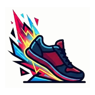
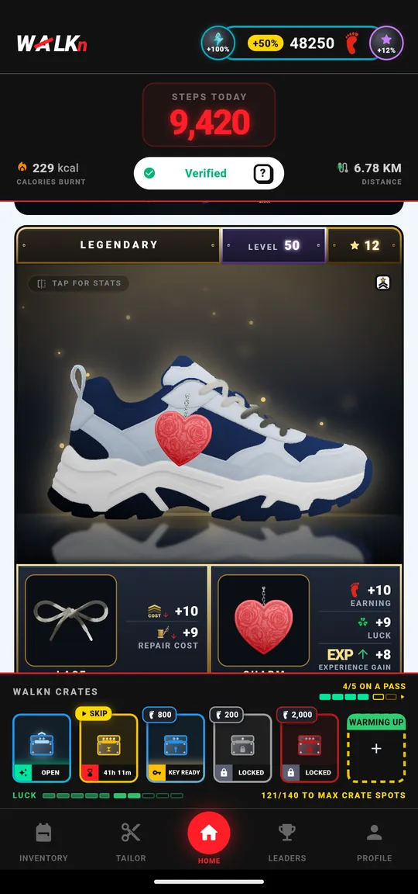
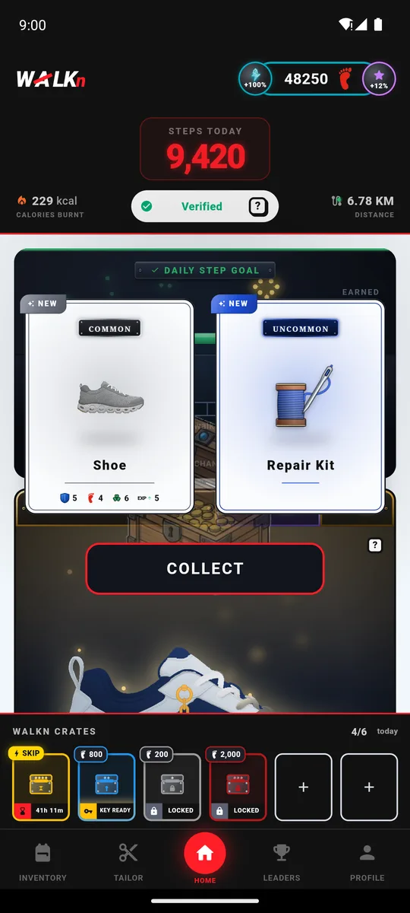
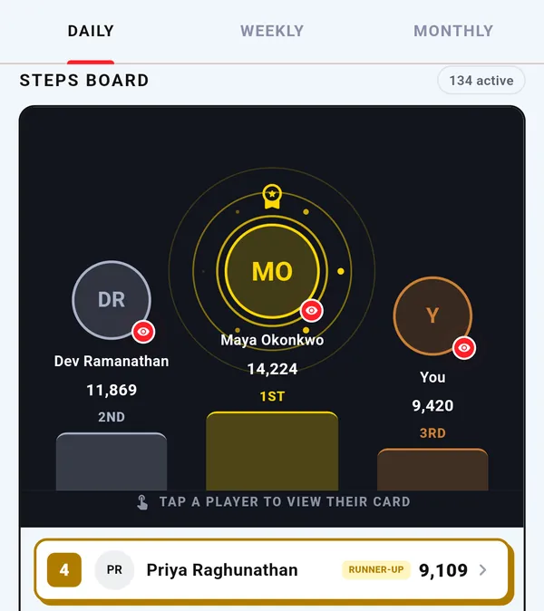
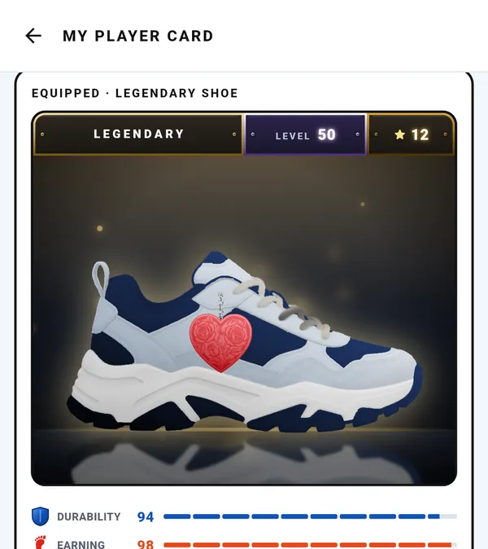

WALKnEvery verified step goes into a real piece of gear on your feet — a shoe that levels up, earns stats, wears down with distance, and slowly becomes unmistakably yours. Everyone starts in a plain pair. What yours turns into is entirely down to how far you walk.

It's a proper step counter first. Accurate, quiet, running in the background with no wearable and no subscription. It just wraps a game around your daily steps, so you actually keep opening it.

Common all the way to Legendary, with shoes, laces, charms, keys and repair kits inside. Your first crate is guaranteed early on — no waiting on a lucky drop.

Daily, weekly and monthly step leaderboards with real rewards, plus a separate streak board for the most stubborn walkers. Everyone on it walked for it.

Level it up, push its stats past their limits, socket a charm, weave better laces. Keep it repaired or watch your earnings fall. Feed outgrown gear to the tailor for a shot at a tier above.
Most pedometers count any shake. WALKn checks how you're actually moving — your walking rhythm and your real displacement — so shaking the phone, driving, or leaving it on the dog doesn't count. Everyone on the leaderboard walked for it.